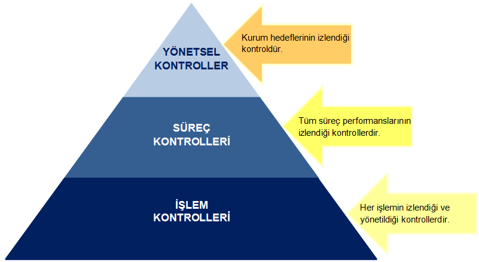
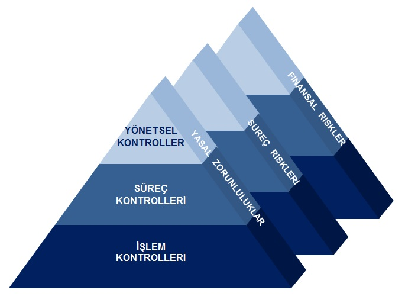

CN DANIŞMANLIK
EĞİTİM,DENETİM,DANIŞMANLIK
DENETİM HİZMETLERİ
Denetim günümüzde farklı bir noktaya ulaştı. Organizasyonların risklere karşı korunması, kontrol sistemlerinin etkinliğinin sağlanması, yasal mevzuatlara ve Şirket prosedürlerinin uygunluğu konusunda iç denetim etkin rol oynuyor.
CN Danışmanlık olarak; sizin adınıza denetimleri planlıyor ve gerçekleştiriyoruz.
Etkin ve verimli bir İÇ DENETİM SİSTEMİNDE 3 tip kontrol yapılır.

NEDEN KONTROL SİSTEMLERİ VAR ?
- Yasalara ve yönetmeliklere uyumu sağlayan kontroller : YASAL ZORUNLULUKLAR
- Süreç performans kriterlerinin ölçümlenerek süreç yönetimini sağlayan kontroller : SÜREÇ RİSKLERİ
- Finansal sonuçları etkileyen süreç performans kriterlerinin yönetimini sağlayan kontroller : FİNANSAL RİSKLER
